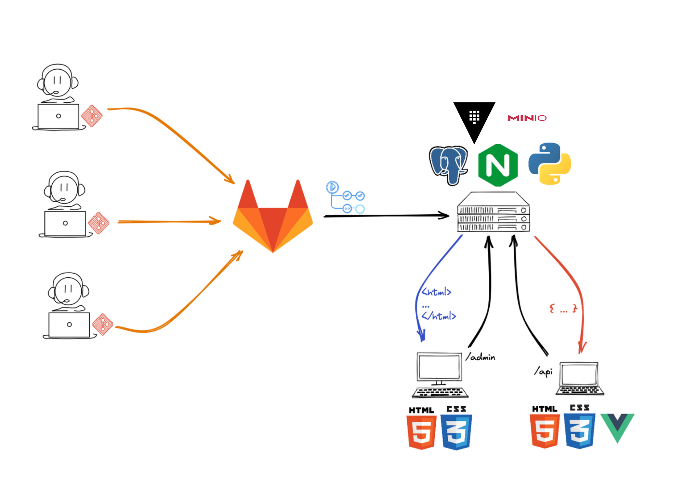

Infraestructura del servidor la cátedra¶
Información de la infraestructura del servidor de la asignatura Proyecto de Software.
Infraestructura¶

Versiones a utilizar¶
- Lenguaje: Python 3.8.10.
- Servidor Web: nginx/1.18.0 (Ubuntu).
- Dependencias Python: Poetry (1.6.1).
Código en el server para cada grupo¶
Logs¶
Info
Pronto se publicarán los enlaces para poder visualizar los logs.
Detalles de la infraestructura¶
En sus máquinas de desarrollo¶
- Par de claves SSH.
- Repositorio Git Clonado.
- Dependencias instaladas con Poetry.
- Uso de ambiente de development (FLASK_ENV=development).
En Gitlab¶
- Repositorio Central de Git.
- El deploy de la aplicación se realizará automáticamente con cada push a main.
- Para que se pueda realizar correctamente tenga en cuenta las definiciones de la cátedra respecto a los requisitos que debe cumplir el proyecto.